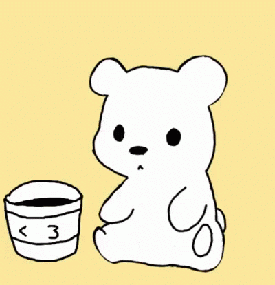

Você gostaria de sair comigo?
Mensagem fofa
Sei que isso vai ser meio cringe não o q pensaras disso mas vamos lá Quando eu penso em você, um sorriso surgi no meu rosto, junto com uma dor no peito e a vários pensamentos felizes, já os tristes se tornam esperança diante da incerteza do futuro, seria isso o que chamam de amor/paixão? Não sei responder essa pergunta, essa mistura de sentimentos contraditórios é realmente intrigante e desafiadora de compreender. No entanto, é justamente isso que o torna tão belo e significativo, que nem mesmo a mais poderosa inteligência é capaz de entender. Independente da respota obrigado por tudo, por todos os momentos , tu me ajudaste a evoluir como pessoa! "E então ela perguntou se ele acreditava em Deus, e ele respondeu: 'A pergunta mais pertinente teria sido: Deus consegue acreditar em mim? Porque muita coisa aconteceu na Terra em quatro bilhões e meio de anos, para eu achar que um Deus possa se importar comigo ou com os meus problemas. Mas recentemente concluí que não existe outra explicação para o modo como você e eu acabamos juntos no mesmo planeta, na mesma espécie, no mesmo século, no mesmo país, no mesmo estado, na mesma cidade, no mesmo corredor, na frente da mesma porta, pela mesma razão, no mesmo instante. Se Deus não acreditasse em mim, então eu teria que acreditar que você foi só uma coincidência. E para mim, você ser uma coincidência em minha vida é bem mais difícil compreender que a existência de um poder supremo.'" livro: todas as suas imperfeições
Fechar
Abrir Mensagem Fofa
Não :(
Sim :)
